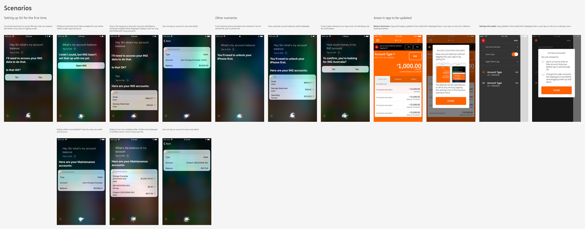
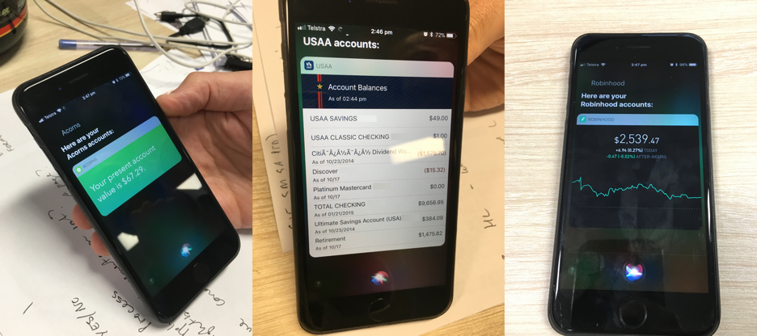
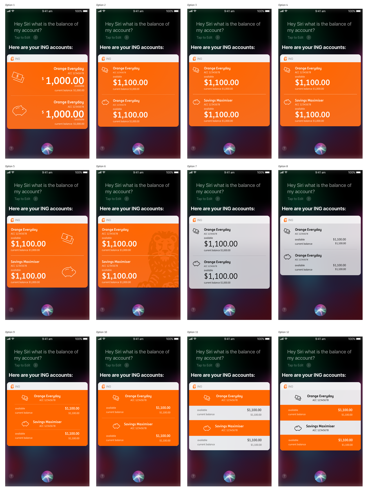
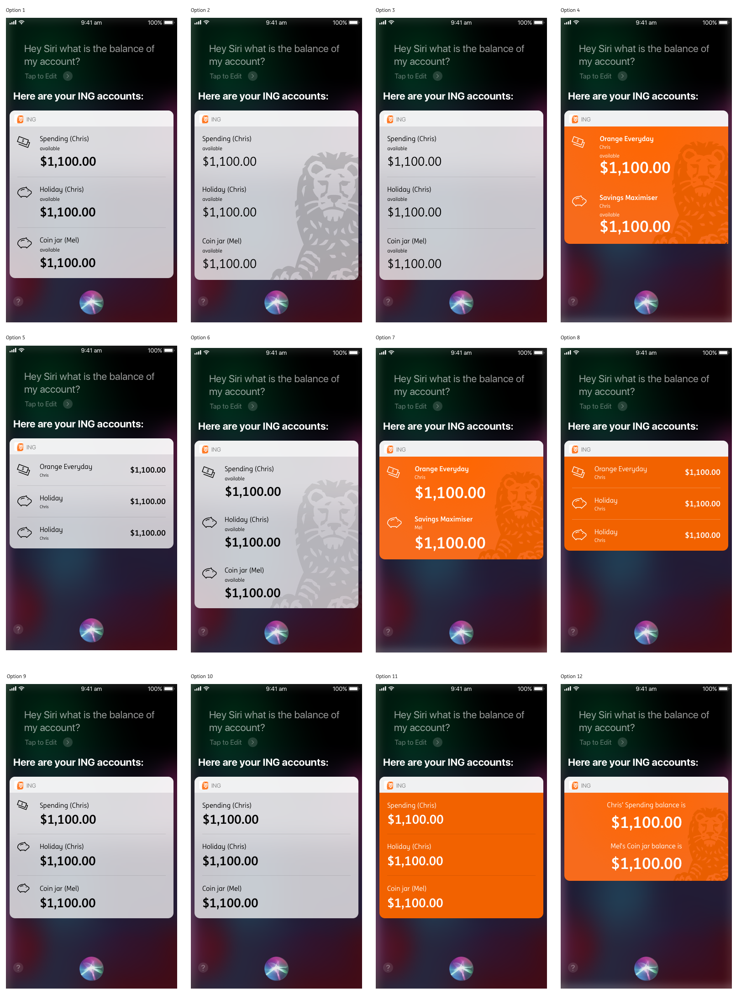
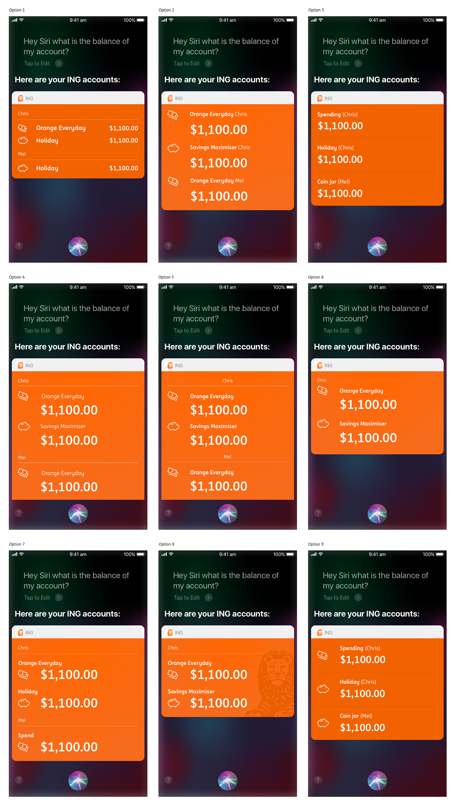

I designed Australia's first Siri banking experience to test how voice could become a practical part of everyday banking. As lead designer, I helped shape the MVP from early opportunity framing through to launch. I worked across innovation, marketing, engineering, and customer intelligence teams to define the experience, test the concept against customer demand, and translate platform constraints into a product the team could ship with confidence. My efforts resulted in an experience that launched quickly and created a foundation for future voice led services.
Hey Siri, What's My Balance?
Designing Australia's first Siri banking experience for fast, trustworthy voice-based balance checks.
Overview
ING was exploring new interaction models to stay ahead of shifting customer expectations. Voice assistants were becoming mainstream, and we saw an opportunity to test whether conversational banking could deliver real utility in everyday moments.
This project focused on launching an early Siri banking experience that let customers check their account balance hands-free while establishing a foundation for future voice-enabled banking capabilities.

Challenge
The team needed to design a banking interaction that felt fast and natural in voice, but still met trust, security, and platform constraints. SiriKit was still early, customization options were limited, and there was little established guidance for voice banking patterns in Australia.
The core challenge was finding the right MVP: valuable enough for customers, feasible for engineering, and credible for stakeholders.
Designing for an emerging voice platform meant balancing customer utility, technical feasibility, and trust from day one.
Process
I worked across innovation, marketing, engineering, and customer intelligence to combine market validation with rapid product experimentation.
We began with customer and platform research to understand appetite for voice banking and to quantify the opportunity. Our target segment was tech enthusiasts who actively sought convenience and automation in day-to-day financial tasks.
- 70% of 230k iOS users in our mobile app registered customer base were active on iOS.
- 33% of surveyed Siri users wanted their bank to support payment functionality through voice.
- Based on our survey, approximately 760,000 Siri users in Australia wanted voice payments but were not getting it from their bank.
In parallel, we mapped scenarios, benchmarked comparable voice experiences, and iterated with engineering against SiriKit limitations to identify what was feasible for launch. During this phase, we adjusted scope from voice payments to balance checks so we could deliver a practical, lower-risk MVP while the National Payments Platform evolved.


Mapping possible voice scenarios and identifying touchpoints in the app

Comparative app benchmark of Siri interactions
Design evolution moved from early assumptions that little was customizable to a final direction that balanced system conventions with clear ING brand expression.



Evolution of the Siri balance interaction design across three iteration sets
Solution
We shifted from an initial payment-focused ambition to a balance-check MVP that could launch sooner and reduce risk while still proving customer value.
The final solution gave customers a simple voice pathway to retrieve account balance information through Siri, supported by clear confirmation patterns and an interface designed to feel recognizably ING within Siri's system boundaries.
This approach created a practical first release while preserving a roadmap toward broader voice banking tasks.
Impact
The feature launched in December 2017 and showed immediate early-adopter traction, with 3,000 uses in the first two days and 10,000 interactions by January 2018.
Beyond usage, the launch delivered strong PR and reinforced ING's innovation positioning at a time when voice banking was still emerging. The project also gave the team real-world learning about conversational behavior, platform limits, and how to sequence future voice capabilities.
Reflection
In emerging spaces, a tightly scoped MVP can still create strong customer value when it is evidence-led, designed for trust, and treated as a platform for learning rather than a final state.